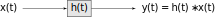

Lecture 13
CT System Analysis and Design using Laplace
2025-09-24
Recall from ECE 2714 that we can analyze electrical circuits that form LTI systems by
Deriving a governing equation (LCDE)
Finding the impulse response \(h(t)\)
Using convolution to determine the output \(y(t)\) given an input \(x(t)\)
Or alternatively using Fourier analysis
Determine stability and derive the frequency response \(H(j \omega)\)
use convolution theorem to find output \(Y(j\omega)\) and use the inverse Fourier transform to find \(y(t)\).
Now that we have Laplace as a tool we can simplify this process further. The idea is to go back to circuits and take the Laplace transform of each element’s voltage-current model
Resistor \[\begin{aligned} v_R(t) &= R\, i_R(t)\\ V_R(s) &= R\, I_R(s) \end{aligned}\] Impedance \(R\), Admittance \(\frac{1}{R}\)
Capacitor \[\begin{aligned} i_C(t) &= C\, \frac{dv_c}{dt}(t)\\ I_C(s) &= C\left[sV_C(s) - v_c(0^-) \right]\\ I_C(s) &= CsV_C(s) - Cv_c(0^-) \end{aligned}\] or rearranging \[V_C(s) = \frac{1}{Cs}I_C(s) + \frac{v_C(0^-)}{s}\] Impedance \(\frac{1}{Cs}\), Admittance \(Cs\)
Inductor \[\begin{aligned} v_L(t) &= L\, \frac{di_L}{dt}(t)\\ V_L(s) &= L\left[sI_L(s) - i_L(0^-) \right]\\ V_L(s) &= LsI_L(s) - Li_L(0^-) \end{aligned}\] or rearranging \[I_L(s) = \frac{1}{Ls}V_L(s) + \frac{i_L(0^-)}{s}\] Impedance \(Ls\), Admittance \(\frac{1}{Ls}\)
This gives us new circuit models in Laplace domain with either constant voltage or current sources representing the terms containing auxiliary conditions at \(t=0^-\). Using KVL and KCL with these models gives us a convenient way to go from a circuit directly to a transfer function.
Example: RC with IC
Example: RLC with no I.C.
This works with active (op-amp) circuits as well.
Example: Sallen-key
Most upper level circuit courses will use these techniques. e.g. AC-circuits.
Analyzing Block Diagrams
Recall from ECE 2714 that block diagrams can be used to model systems and implement/realize systems.
 \(\Longrightarrow\)
series connection, the overall transfer function \(H(s) = H_1(s)\cdot H_2(s)\)
Transformation of input and output to Laplace domain for a series connection. parallel connection, the overall transfer function \(H(s) = H_1(s)+ H_2(s)\)
Transformation of input and output to Laplace domain for a parallel connection. feedback connection, the overall transfer function \(H(s) = \frac{H_1(s)}{1+ H_1(s)\cdot H_2(s)}\)
Transformation of input and output to Laplace domain for a feedback connection.
We can use block diagrams to derive an overall transfer function from sub-components.
Example: PID controller
Example: DC Motor
System Realization
We can also use block diagrams in the opposite way, to implement, or realize, a given transfer function (for example from a filter design) using three basic building blocks: summation, amplifier (gain), and integrator.
\(\Longrightarrow\)
The realization is not unique, with different canonical forms, each with advantages and disadvantages (e.g. reduced number of components and reduced sensitivity to component variation).
Example
Given a transfer function
\[H(s) = \frac{s+a}{s^2 + bs + c}\] for \(a,b,c\in\mathbb{R}\), implement the system in terms of summations, amplifiers, and integrators.
TODO: DFI, DFII, transposed DFII, parallel and cascade of second order systems